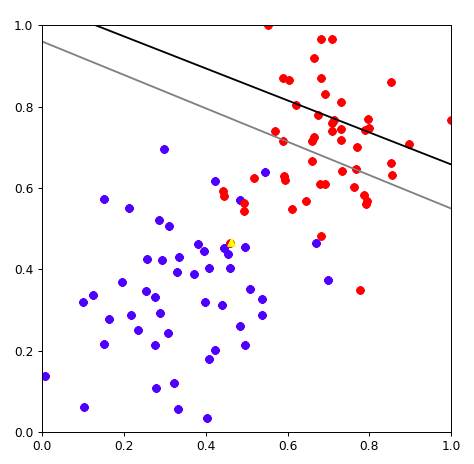

02-分类和回归-感知机
机器学习中两大类问题，分类和回归
- 回归：how much
- 分类： yes/no
- 是否是垃圾邮件
- 是否会下载应用
- 这个人是不是病了
感知机：神经网络的基础
感知能力在心理学上的定义是人脑通过其感受器所接收到的刺激的物理信息。
感官就是负责接收特定的物理刺激，再将刺激转换成可被人脑理解的电化学信息的物理系统。
感知案例
香蕉还是苹果
如何找到这样的一条线？
1,1 的值对应的是苹果 还是香蕉？
0,0的值对应的是苹果还是香蕉？
1,0 的值呢？
0,1 的值呢？
决策边界
y=mx+b 是线性回归问题，预测的都是在线上分布的点
分类问题，产生了的是一个决策线， 在决策线上的点 是一种类别（苹果），线下的点是一种类别（香蕉）
m_1x_1 + m_2x_2 + b = 0 这一条线就是决策边界， 把坐标点带入决策边界线
score = m_1x_1+m_2x_2+b
f\left( x\right) =\begin{cases}score >0:Apple\\ score <0:banana\end{cases}
换成矩阵运算方式
weight=\begin{bmatrix} w_{1} \\ w_{2} \\ b \end{bmatrix}
feature = \begin{bmatrix} x_{1} & x_{2} & b \end{bmatrix}
Feature * Weight >0 Apple
Feature * Weight <0 Banana
\overline {f(x_1,x_2)}=\begin{cases}1\left( Feature*Weight >0\right) \\ 0\left( Feature*Weight <0\right) \end{cases}
高维空间的决策边界
换成矩阵运算方式
weight=\begin{bmatrix} w_{1} \\ w_{2}\\ w_{3} \\ b \end{bmatrix}
feature = \begin{bmatrix} x_{1} & x_{2} & x_{3} &b \end{bmatrix}
Feature * Weight >0 Apple
Feature * Weight <0 Banana
\overline {f(x_1,x_2,x_3)}=\begin{cases}1\left( Feature*Weight >0\right) \\ 0\left( Feature*Weight <0\right) \end{cases}
感知机
激活函数 step function
香蕉苹果分类器
| #初始化 w_1 , w_2, b
weight1 = 0.8
weight2 = 0.8
bias = -0.5
|
| test_inputs = [(0, 0), (0, 1), (1, 0), (1, 1)]
# 红色，圆形是苹果。 其他是香蕉
correct_outputs = [False, False, False, True]
outputs = []
|
| def activeFuction(value):
if value>=0 :
return True
else :
return False
|
| for index ,item in enumerate(test_inputs):
result = weight1 * item[0] + weight2 * item[1] + bias
if (activeFuction(result) == correct_outputs[index]):
print("({},{}) I'am good".format(item[0],item[1]))
else :
print("({},{}) I'am not good, 靠我近点".format(item[0],item[1]))
|
画图展示当前内容：
1
2
3
4
5
6
7
8
9
10
11
12
13
14
15
16
17
18
19
20 | import matplotlib.pyplot as plt
import numpy as np
%matplotlib notebook
fig = plt.figure(figsize=(6, 6), dpi=80)
plt.xlim(-1,4)
plt.ylim(-1,4)
X = np.linspace(-10, 10, 1000)
Y = -(weight1*X + bias)/weight2
plt.scatter(X,Y,c='r',marker='o',label='like')
for index ,item in enumerate(test_inputs):
result = weight1 * item[0] + weight2 * item[1] + bias
if (activeFuction(result) == correct_outputs[index]):
print("({},{}) I'am good".format(item[0],item[1]))
else :
print("({},{}) I'am not good, 靠我近点".format(item[0],item[1]))
if (correct_outputs[index] ==True):
plt.scatter(item[0],item[1],c='r',marker='o',label='like')
else :
plt.scatter(item[0],item[1],c='b',marker='o',label='like')
plt.show()
|
感知机的运算过程
回顾线性回归的移动方法。
0.8x_1 + 0.8x_2-0.5 =0 这条直线需要靠近坐标
(0,1)和(1,0)
原函数，先减去(0,1,1) 让线靠近(0,1)坐标点
(0.8-0)x_1+(0.8-1)x_2+(-0.5-1) = 0
0.8x_1 - 0.2x_2 - 1.5 = 0
步子太大了。 需要一个学习速率，learningrate= 0.1
原函数，先减去(0*learningrate,1*learningrate,1*learningrate) 让线靠近(0,1)坐标点
(0.8-0*learningrate)x_1+(0.8-1*learningrate)x_2+(-0.5-1*learningrate) = 0
(0.8-0)x_1 + (0.8-0.1)x_2 - (-0.5-0.1) = 0
0.8x_1+0.79x_2-0.6=0
采用这种方式， 黄色的线就靠近了（0,1）点一些。 多次重复上面的步骤。
python实现感知机
感知机算法流程
点（p,q) 分类label 标签是 y
分类计算公式
\widehat {y}=step\left( w_{1}x_{1}+w_{2}x_{2}+b\right)
step为激活函数（例如，大于0，为苹果，小于0为香蕉）
感知机算法流程：
- 如果点（p，q）分类正确， 什么事情都不做
- 如果点（p，q）分类不正确
- 分类为香蕉，实际上是苹果。 线往上移。 学习速率为\alpha , (w_{1},w_{2},b) 减去 (\alpha*p,\alpha*q,\alpha*1)
- (w_{1}=w_{1}-\alpha*p,w_{2}=w_{2}-\alpha*q,b=b-\alpha*1)
- 分类为苹果，实际上是香蕉。 线往下移。 学习速率为\alpha , (w_{1},w_{2},b) 加上 (\alpha*p,\alpha*q,\alpha*1)
- (w_{1}=w_{1}+\alpha*p,w_{2}=w_{2}+\alpha*q,b=b+\alpha*1)
代码演示
| ##加载data.csv
import numpy as np
data = np.loadtxt("data.csv",delimiter=",")
|
1
2
3
4
5
6
7
8
9
10
11
12
13 | ###绘制数据点
%matplotlib notebook
# 魔法配置,可以让表格显示在jupyter里面
import matplotlib.pyplot as plt #导包
fig = plt.figure(figsize=(6, 6), dpi=80)
plt.xlim(0.0, 1.0) # Set x limits
plt.ylim(0.0, 1.0) # Set y limits
for i in range(len(data)):
if(data[i][2]==0):
plt.scatter(data[i][0], data[i][1],c='r') #红色代表是苹果
else:
plt.scatter(data[i][0], data[i][1],c='b') #蓝色代表是香蕉
plt.show()
|
随机画出来一条线
| #保证数据统一，可复现，设置numpy的随机数
np.random.seed(42)
W = np.array(np.random.rand(2,1))
W
# array([[0.37454012 ], [0.95071431]])
# b 就等于-1吧
0.37454012 × X1 + 0.95071431 × X2 - 1 = 0
|
把这条线画出来
| ### 把这个线画出来，准备数据
XX = np.linspace(-2, 2, 50)
w1 = W[0][0]
w2 = W[1][0]
b = -1
YY = (-b - w1*XX)/w2
|
1
2
3
4
5
6
7
8
9
10
11
12
13
14 | #画
%matplotlib notebook
# 魔法配置,可以让表格显示在jupyter里面
import matplotlib.pyplot as plt #导包
fig = plt.figure(figsize=(6, 6), dpi=80)
plt.xlim(0.0, 1.0) # Set x limits
plt.ylim(0.0, 1.0) # Set y limits
plt.plot(XX,YY)
for i in range(len(data)):
if(data[i][2]==0):
plt.scatter(data[i][0], data[i][1],c='r')
else:
plt.scatter(data[i][0], data[i][1],c='b')
plt.show()
|
看黑色箭头指向的点。这个点是个红色的点，应该是苹果。
预测的结果为：
w1 * 0.4619999 + w2* 0.466678 + b = 0
w1 = 0.37454012
w2 = 0.95071431
b = -1
0.37454012*0.4619999 + 0.95071431 * 0.466678 - 1 = 0.38328504925183204 < 0
说明预测结果是一个香蕉。 分类错误。 线需要靠近这个点。
学习速率为\alpha=0.01 , (w_{1},w_{2},b) 加上 (\alpha*p,\alpha*q,\alpha*b)
- (w_{1}=w_{1}+\alpha*p,w_{2}=w_{2}+\alpha*q,b=b+\alpha*b)
| learningrate = 0.01
w1 = w1 + learningrate * 0.4619999
w2 = w2 + learningrate * 0.466678
b = b + learningrate * 1
YY2 = (-b - w1*XX)/w2
|
移动完毕后，重新绘图
1
2
3
4
5
6
7
8
9
10
11
12
13
14
15
16
17 | %matplotlib notebook
# 魔法配置,可以让表格显示在jupyter里面
import matplotlib.pyplot as plt #导包
fig = plt.figure(figsize=(6, 6), dpi=80)
plt.xlim(0.0, 1.0) # Set x limits
plt.ylim(0.0, 1.0) # Set y limits
plt.plot(XX,YY,color='black')
plt.plot(XX,YY2,color='gray')
for i in range(len(data)):
if(data[i][2]==0):
plt.scatter(data[i][0], data[i][1],c='r')
else:
plt.scatter(data[i][0], data[i][1],c='b')
plt.scatter([0.4619999],[0.466678],c='yellow',marker="^")
plt.show()
|

完整代码
1
2
3
4
5
6
7
8
9
10
11
12
13
14
15
16
17
18
19
20
21
22
23
24
25
26
27
28
29
30
31
32
33
34
35
36
37
38
39
40
41
42
43
44
45
46
47
48
49
50
51
52
53
54
55
56
57
58
59
60 | import numpy as np
# 设置随机数种子，保证每次执行结果一致
np.random.seed(42)
#激活函数
def stepFunction(t):
if t >= 0:
return 1
return 0
# 矩阵运算 mx + b x是数据，w是权重
def prediction(X, W, b):
return stepFunction((np.matmul(X,W)+b)[0])
def perceptronStep(X, y, W, b, learn_rate = 0.01):
for i in range(len(X)):
y_hat = prediction(X[i],W,b)
if y[i]-y_hat == 1:
W[0] += X[i][0]*learn_rate
W[1] += X[i][1]*learn_rate
b += learn_rate
elif y[i]-y_hat == -1:
W[0] -= X[i][0]*learn_rate
W[1] -= X[i][1]*learn_rate
b -= learn_rate
return W, b
def trainPerceptronAlgorithm(X, y, learn_rate = 0.01, num_epochs = 25):
x_min, x_max = min(X.T[0]), max(X.T[0])
y_min, y_max = min(X.T[1]), max(X.T[1])
W = np.array(np.random.rand(2,1))
b = np.random.rand(1)[0] + x_max
# These are the solution lines that get plotted below.
boundary_lines = []
for i in range(num_epochs):
# In each epoch, we apply the perceptron step.
W, b = perceptronStep(X, y, W, b, learn_rate)
boundary_lines.append((-W[0]/W[1], -b/W[1]))
return boundary_lines
data = np.loadtxt("data.csv",delimiter=",")
X = data[:,0:2]
X[:,0]
y = data[:,2:3]
lines = trainPerceptronAlgorithm(X,y,num_epochs = 35)
import numpy as np
%matplotlib notebook
# 魔法配置,可以让表格显示在jupyter里面
import matplotlib.pyplot as plt #导包
XX = np.linspace(-2, 2, 50)
fig = plt.figure(figsize=(5, 5), dpi=80)
plt.xlim(0.0, 1.0) # Set x limits
plt.ylim(0.0, 1.0) # Set y limits
for i in range(len(y)):
if(y[i]==0):
plt.scatter(X[i][0], X[i][1],c='b')
else:
plt.scatter(X[i][0], X[i][1],c='r')
for index,line in enumerate(lines):
Y = line[0]*XX + line[1]
if(index == (len(lines)-1)):
plt.plot(XX, Y, color="black", linewidth=2, linestyle="--")
else:
plt.plot(XX,Y)
plt.show()
|
动画展现
1
2
3
4
5
6
7
8
9
10
11
12
13
14
15
16
17
18
19
20
21
22
23
24
25 | import matplotlib.animation as animation
def update_points(num):
point_ani.set_data(XX, lines[num][0]*XX + lines[num][1] )
return point_ani,
XX = np.linspace(-2, 2, 50)
y = data[:,2:3]
fig = plt.figure(figsize=(5, 5), dpi=80)
plt.xlim(0.0, 1.0) # Set x limits
plt.ylim(0.0, 1.0) # Set y limits
for i in range(len(y)):
if(y[i]==0):
plt.scatter(X[i][0], X[i][1],c='r')
else:
plt.scatter(X[i][0], X[i][1],c='b')
Y = lines[0][0]*XX + lines[0][1]
point_ani, = plt.plot(XX, Y, color="black", linewidth=2, linestyle="--")
plt.grid(ls="--")
# 开始制作动画
ani = animation.FuncAnimation(fig, update_points, np.arange(0, 100), interval=25, blit=True)
plt.show()
|
感知机与梯度下降
\dfrac {MSE}{\Delta 截距} = \displaystyle \sum_{i=1}^{10} \left(2 Guess_i- 2 Actual_{i} \right)
\dfrac {MSE}{\Delta 斜率} = \displaystyle \sum_{i=1}^{10} 2 x \left(Guess_i- Actual_{i} \right)
m_1x_1+m_2x_2+b=0
m_2x_2 = -b - m_1x_1
x_{2}=-\dfrac {b}{m_{2}}-\dfrac {m_{1}}{m_{2}}x_{1}
截距=-\dfrac {b}{m_{2}}
斜率= -\dfrac {m_{1}}{m_{2}}
公式是一样的，只是变化了一种写法
接下来我们来分析mse， 期待值Guess是1，真实值Actual是1,期待值Guess是0，真实值Actual是0
1-1=0 和 0-0=0 ,如果点（p，q）分类正确， 什么事情都不做
期待值Guess是1，真实值Actual是0 , 1-0 =0
分类为苹果，实际上是香蕉。 线往下移。 学习速率为\alpha , (w_{1},w_{2},b) 加上 (\alpha*p,\alpha*q,\alpha*1)
- (w_{1}=w_{1}+\alpha*p,w_{2}=w_{2}+\alpha*q,b=b+\alpha*1)
期待值Guess是0，真实值Actual是1, 0-1=-1
分类为香蕉，实际上是苹果。 线往上移。 学习速率为\alpha , (w_{1},w_{2},b) 减去 (\alpha*p,\alpha*q,\alpha*1)
- (w_{1}=w_{1}-\alpha*p,w_{2}=w_{2}-\alpha*q,b=b-\alpha*1)
经过推理发现，感知机和线性回归的梯度下降干的事情是一模一样的，计算逻辑步骤也是一模一样，唯一的区别就是需要把线性回归的结果，经过一个激活函数变化，这个激活函数可以是sigmod，可以是relu，也可以是任意的激活函数。
梯度下降的优化策略
所有的点都要参与计算mse，来确定更新的m和b
- mini-batch gradient descent
一部分点参与计算mse，来更新m和b
- stochastic gradient decent
一次只观察一个点，来更新m和b

通常在实际操作中会用batch或者stochastic的梯度下降，全套数据梯度下降，计算量太大，收敛速度过慢。